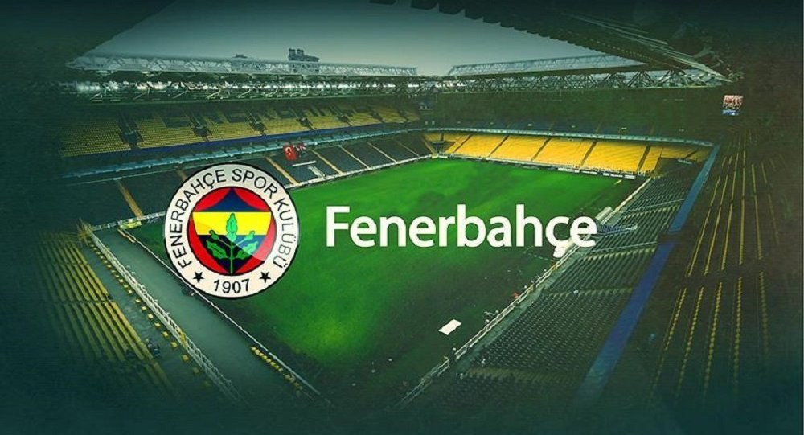
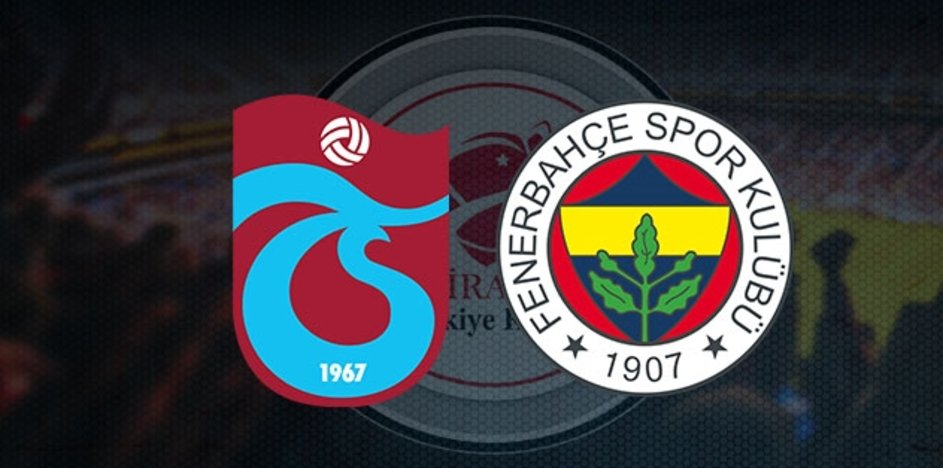
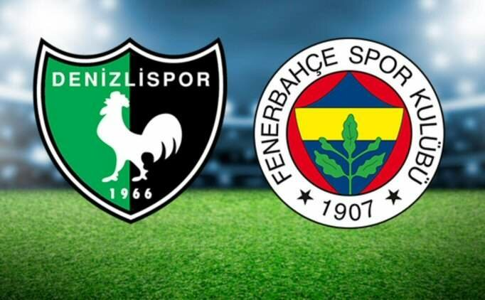

| HABERLER | KLÜP | BRANŞLAR | FİKSTÜR | FENERİUM |
|---|
| GİRİŞ YAP | KAYIT OL |
|---|---|
|  |
Başkan Vekilimiz Semih Özsoy’un açıklamalarıVekilimiz Semih Özsoy, Trabzonspor karşılaşmasının ardından basın mensuplarına açıklamalarda bulundu. İlk olarak şehitlerimize ilişkin düşüncelerini paylaşan Semih Özsoy, “Şehitlerimize Allah’tan rahmet, milletimize başsağlığı diliyoruz. Kalbi ve samimi duygularla ne kadar üzüldüğümüzü, ne kadar kahredici bir durumda olduğumuzu söylemek isteriz. Nur içinde yatsınlar, cennette mekanları olsun. Ailelerine sabırlar diliyoruz. Sevenlerine ve milletimize başsağlığı diliyoruz.” dedi. Haberin devamı... |
Trabzonspor 2-1 FenerbahçeZiraat Türkiye Kupası yarı final ilk maçında deplasmanda Trabzonspor ile karşılaşan Fenerbahçemiz sahadan 2-1 mağlup ayrıldı. Takımımızın golü 81. dakikada Vedat Muriqi’den gelirken; Trabzonspor’un gollerini 46. dakikada Alexander Sörloth ve 66. dakikada Filip Novak kaydetti. Futbolcularımız ısınmak için oyun alanına ay yıldız tişörtlerle çıkarken; her iki takım oyuncuları da sahaya “VATAN SİZE MİNNETTAR” pankartıyla geldi. Ziraat Türkiye Kupası yarı final rövanş maçı, 21 Nisan Salı günü saat 20.30'da Ülker Stadyumu Fenerbahçe Şükrü Saracoğlu Spor Kompleksi'nde oynanacak. Haberin devamı... |
|  |
|  |
Fikstürün Tamamını Görmek İçin Tıklayın.. |